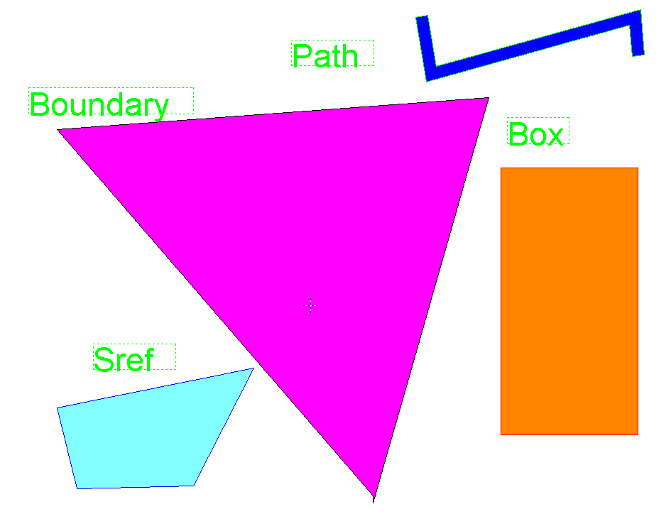
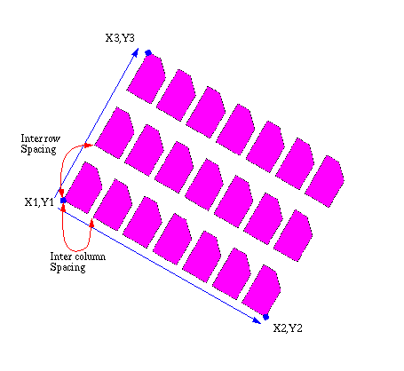
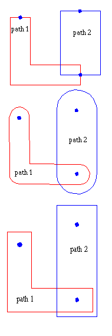

-
introduction
-
bachus nauer forms
-
GDSII BNF
-
Record header
-
Data types
-
record types overview
-
record types description
-
example file

-
text presentation of GDSII file in
KEYformat
-
hex presentation of same file
-
GDSII file
GDSII Stream format is the standard file format for transfering/archiving
2D graphical design data. It contains a hiearchy of structures, each structure
containing elements (boundary/polygon, path/polyline, text,box, structure
references, structure array references). The elements are situated on layers.
It is a binary format that is platform independent, because it uses internally
defined formats for its data types. While reading GDSII files, the GDSII
internal data types (like reals, integers etc.) need to be converted to
the platform/CAE package datatypes that are used.The GDSII format is a
sequential list of records, each record contains a header to tell what
information is in the record.The order of the record needs to be according
to the GDSII BNF, because of this strict organization it is relativly easy
to parse. The maximum number of vertixes is officially only 200 x,y pairs,
but many packages can read up to the absolute maximum of 64k/2=32k, simple
because this is the maximum record lenght that can be specified (two bytes).The
format is hard to read, since it is binary, for that viewers are available
to view (boolean) the contents as ASCII. Also an ASCII format has
been developed (KEY format) which is more than just a text representation.
It is possible to convert GDSIIformat to KEYformat and back.
KEYformat has extended the basic primitives to contain cicrles, arcs, polygons/polylines
with arc segments.
The Bachus Nauer Form uses the following symbols:
| Symbol Name |
Symbol |
Meaning |
| Double Colon |
:: |
"Is composed of." |
| Square brackets |
[ ] |
An element which can occor zero or one time. |
| Braces |
{ } |
Choose one of the elements within the braces. |
| Braces with an asteriks |
{ }* |
The elements within the braces can occur zero or more times. |
| Braces with a plus |
{ }+ |
The elements within braces must occur one or more times. |
| Angle brackets |
< > |
These elements are further defined as a seperate entitie in the syntax
list. |
| Vertical bar |
| |
Or |
The following is the Bachus Naur Form of the GDSI format, the words in
capital are the names of RECORDS
The Stream format output file is composed of variable length records. Record
length is measured in bytes. The minimum record length is four bytes. Within
the record, two bytes (16 bits) is a word. The 16 bits in a word are numbered
0 to 15, left to right.The first four bytes of a record compose the recordheader.
The first two bytes of the recordheader contain a count (in eight-bit bytes)
of the total record length, so the maximum length is 65536 (64k). The next
record starts immediately after the last byte of the previous record.The
third byte of the header is the record type. The fourth byte of the header
identifies the type of data contained within the record. The fifth until
count bytes of a record contain the data.
| Bitnr |
0 |
1 |
2 |
3 |
4 |
5 |
6 |
7 |
8 |
9 |
10 |
11 |
12 |
13 |
14 |
15 |
| Word1 |
Total Record length in bytes |
| Word2 |
Record Type |
Data type |
| Word3 |
Data until Word n (total record length/2) |
The fourth byte in the record header contains the data type for the rest
of the record. The record length is used to find the number of items
of the specified datatype.
| Data Type |
Value |
| No Data |
0 |
| Bit Array |
1 |
| Two Byte Signed Integer |
2 |
| Four Byte Signed Integer |
3 |
| Four Byte Real |
4 (not used) |
| Eight Byte Real |
5 |
| ASCII string |
6 |
-
Bit Array:
A bit array is a word which uses the value of a particular bit or group
of bits to represent data. A bit array allows oneword to represent a number
of simple pieces of information.
-
Two-Byte Signed Integer:
2-byte integer = 1 word 2s-complement representation. The range of
two-byte signed integers is -32,768 to 32,767.
The following is a representation of a two-byte integer, where S is
the sign and M is the magnitude.
smmmmmmm mmmmmmmm
The following are examples of two-byte integers:
00000000 00000001 = 1
00000000 00000010 = 2
00000000 10001001 = 137
11111111 11111111 = -1
11111111 11111110 = -2
11111111 01110111 = -137
-
Four-Byte Signed Integer:
4-byte integer = 2 word 2s-complement representation
The range of four-byte signed integers is -2,147,483,648 to 2,147,483,647.
The following is a representation of a four-byte integer, where S is
the sign and M is the magnitude.
smmmmmmm mmmmmmmm mmmmmmmm mmmmmmmm
The following are examples of four-byte integers:
00000000 00000000 00000000 00000001 = 1
00000000 00000000 00000000 00000010 = 2
00000000 00000000 00000000 10001001 = 137
11111111 11111111 11111111 11111111 = -1
11111111 11111111 11111111 11111110 = -2
11111111 11111111 11111111 01110111 = -137
-
Four-Byte Real
4-byte real = 2-word floating point representation
(See 5.)
-
Eight-Byte Real
8-byte real = 4-word floating point representation
For all non-zero values:
-
A floating point number has three parts: the sign, the exponent, and the
mantissa.
-
The value of a floating point number is defined as:
-
(Mantissa) x (16 raised to the true value of the exponent field).
-
The exponent field (bits 1-7) is in Excess-64 representation.
-
The 7-bit field shows a number that is 64 greater than the actual exponent.
-
The mantissa is always a positive fraction >=1/16 and <1. For a 4-byte
real, the mantissa is bits 8-31. For an 8-byte real, the mantissa is bits
8-63.
-
The binary point is just to the left of bit 8.
-
Bit 8 represents the value 1/2, bit 9 represents 1/4, etc.
-
In order to keep the mantissa in the range of 1/16 to 1, the results of
floating point arithmetic are normalized. Normalization is a process where
by the mantissa is shifted left one hex digit at a time until its left
FOUR bits represent a non-zero quantity. For every hex digit shifted, the
exponent is decreased by one. Since the mantissa is shifted four bits at
a time, it is possible for the left three bits of the normalized mantissa
to be zero. A zero value, also called true zero, is represented by a number
with all bits zero.
The following are representations of 4-byte and 8-byte reals, where S is
the sign, E is the exponent, and M is the magnitude. Examples of 4-byte
reals are included in the following pages, but 4-byte reals are not used
currently. The representation of the negative values of real numbers is
exactly the same as the positive, except that the highest order bit is
1, not 0. In the eight-byte real representation, the first four bytes are
exactly the same as in the four-byte real representation. The last four
bytes contain additional binary places for more resolution.
4-byte real:
SEEEEEEE MMMMMMMM MMMMMMMM MMMMMMMM
8-byte real:
SEEEEEEE MMMMMMMM MMMMMMMM MMMMMMMM MMMMMMMM
MMMMMMMM MMMMMMMM
Examples of 4-byte real:
Note: In the first six lines of the following example, the 7-bit exponent
field = 65. The actual exponent is 65-64=1.
01000001 00010000 00000000 00000000 = 1
01000001 00100000 00000000 00000000 = 2
01000001 00110000 00000000 00000000 = 3
11000001 00010000 00000000 00000000 = -1
11000001 00100000 00000000 00000000 = -2
11000001 00110000 00000000 00000000 = -3
01000000 10000000 00000000 0000000 = 0 .5
01000000 10011001 10011001 1001100 = 1 .6
01000000 10110011 00110011 0011001 = 1 .7
01000001 00011000 00000000 00000000 = 1.5
01000001 00011001 10011001 10011001 = 1.6
01000001 00011011 00110011 00110011 = 1.7
00000000 00000000 00000000 00000000 = 0
01000001 00010000 00000000 00000000 = 1
01000001 10100000 00000000 00000000 = 10
01000010 01100100 00000000 00000000 = 100
01000011 00111110 00000001 00000000 = 1000
01000100 00100111 00010000 00000000 = 10000
01000101 00011000 01101010 00000000 = 100000
-
ASCII String
A collection of ASCII characters, where each character is represented
by one byte. All odd length strings must be padded with a null character
(the number zero), and the byte count for the record containing the ASCII
string must include this null character. Stream read-in programs must look
for the null character and decrease the length of the string by one if
the null character is present.
The following table gives an overview of all the record that are used within
a GDSII file.
| Nr. |
Code |
Mnemonic |
Data Type |
description |
| 0 |
0002 |
HEADER |
Two-Byte Signed Integer |
version number |
| 1 |
0102 |
BGNLIB |
Two-Byte Signed Integer |
begin of library, last modification date and time |
| 2 |
0206 |
LIBNAME |
Two-Byte Signed Integer |
name of library |
| 3 |
0305 |
UNITS |
Eight-Byte Real |
user and database units |
| 4 |
0400 |
ENDLIB |
No Data |
end of library |
| 5 |
0502 |
BGNSTR |
Two-Byte Signed Integer |
begin of structure + creation and modification time |
| 6 |
0606 |
STRNAME |
ASCII string |
name of structure |
| 7 |
0700 |
ENDSTR |
No Data |
end of structure |
| 8 |
0800 |
BOUNDARY |
No Data |
begin of boundary element |
| 9 |
0900 |
PATH |
No Data |
begin of path element |
| 10 |
0A00 |
SREF |
No Data |
begin of structure reference element |
| 11 |
0B00 |
AREF |
No Data |
begin of array reference element |
| 12 |
0C00 |
TEXT |
No Data |
begin of text element |
| 13 |
0D02 |
LAYER |
Two-Byte Signed Integer |
layer number of element |
| 14 |
0E02 |
DATATYPE |
Two-Byte Signed Integer |
Datatype number of element |
| 15 |
0F03 |
WIDTH |
Four-Byte Signed Integer |
width of element in db units |
| 16 |
1003 |
XY |
Four-Byte Signed Integer |
list of xy coordinates in db units |
| 17 |
1100 |
ENDEL |
No Data |
end of element |
| 18 |
1206 |
SNAME |
ASCII string |
name of structure reference |
| 19 |
1302 |
COLROW |
Two-Byte Signed Integer |
number of colomns and rows in array reference |
| 21 |
1500 |
NODE |
No Data |
begin of node element |
| 22 |
1602 |
TEXTTYPE |
Two-Byte Signed Integer |
texttype number |
| 23 |
1701 |
PRESENTATION |
Bit Array |
text presentation, font |
| 25 |
1906 |
STRING |
ASCII string |
character string for text element |
| 26 |
1A01 |
STRANS |
Bit Array |
array reference, structure reference and text transform flags |
| 27 |
1B05 |
MAG |
Eight Byte Real |
magnification factor for text and references |
| 28 |
1C05 |
ANGLE |
Eight Byte Real |
rotation angle for text and references |
| 31 |
1F06 |
REFLIBS |
ASCII string |
name of referenced libraries |
| 32 |
2006 |
FONTS |
ASCII string |
name of text fonts definition files |
| 33 |
2102 |
PATHTYPE |
Two-Byte Signed Integer |
type of PATH element end ( rounded, square) |
| 34 |
2202 |
GENERATIONS |
Two-Byte Signed Integer |
number of deleted structure ????? |
| 35 |
2306 |
ATTRTABLE |
ASCII string |
attribute table, used in combination with element properties |
| 38 |
2601 |
ELFLAGS |
Two-Byte Signed Integer |
template data |
| 42 |
2A02 |
NODETYPE |
Two-Byte Signed Integer |
node type number for NODE element |
| 43 |
2B02 |
PROPATTR |
Two-Byte Signed Integer |
attribute number |
| 44 |
2C06 |
PROPVALUE |
ASCII string |
attribute name |
| 45 |
2D00 |
BOX |
No Data |
begin of box element |
| 46 |
2E02 |
BOXTYPE |
Two-Byte Signed Integer |
boxtype for box element |
| 47 |
2F03 |
PLEX |
Four-Byte Signed Integer |
plex number |
| 50 |
3202 |
TAPENUM |
Two-Byte Signed Integer |
Tape Number |
| 51 |
3302 |
TAPECODE |
Two-Byte Signed Integer |
Tape code |
| 54 |
3602 |
FORMAT |
Two-Byte Signed Integer |
format type |
| 55 |
3706 |
MASK |
ASCII string |
list of layers |
| 56 |
3800 |
ENDMASKS |
No Data |
end of MASK |
Records are always an even number of bytes long. The first four bytes of
a record are the record
header. If a record contains ASCII string data and the ASCII string
is an odd number of bytes long, the data is padded with a null character.
This paragraph lists the record types with a brief description of each.
The descriptions include the record name and a four-digit number in brackets.
The first two numbers within the brackets are the record type, and the
last two numbers in brackets are the data type. All record numbers are
expressed in hexadecimal.
| 0 |
HEADER |
0002 |
Two-Byte Signed Integer |
Contains two bytes of data representing the Stream version number.
| 1 |
BGNLIB |
0102 |
Two-Byte Signed Integer |
Contains the last modification time of a library (two bytes each for year,
month, day, hour, minute, and second), the time of last access (same format),
and marks the beginning of a library.
| Bit |
0 |
1 |
2 |
3 |
4 |
5 |
6 |
7 |
8 |
9 |
10 |
11 |
12 |
13 |
14 |
15 |
| word1 |
l C (hex) # of bytes in record |
| word2 |
01 (hex) 02 (hex) |
| word3 |
year (lastmodification time) |
| word4 |
month |
| word5 |
day |
| word6 |
hour |
| word7 |
minute |
| word8 |
second |
| word9 |
year (last access time) |
| word10 |
month |
| word11 |
day |
| word12 |
hour |
| word13 |
minute |
| word14 |
second |
| 2 |
LIBNAME |
0206 |
ASCII String |
Contains a string which is the library name. The library name must follow
UNIX filename conventions for length and valid characters. The library
name may include the file extension (.sf or db in most cases).
| 3 |
UNITS |
0305 |
Eight-Byte Real |
Contains two eight-byte real numbers. The first number is the size of a
database unit in user units. The second number is the size of a database
unit in meters. For example, if you create a library with the default units
(user unit = 1 micron and 1000 database units per user unit), the first
number is .001, and the second number is 1E-9. Typically, the first number
is less than 1, since you use more than 1 database unit per user unit.
To calculate the size of a user unit in meters, divide the second number
by the first.
Marks the end of a library.
| 5 |
BGNSTR |
0502 |
Two-Byte Signed Integer |
Contains the creation time and last modification time of a structure (in
the same format as the BGNLIB record), and marks the beginning of a structure.
| 6 |
STRNAME |
0606 |
ASCII String |
Contains a string which is the structure name. A structurename may be up
to 32 characters long. Legal structurename characters are:
-
A through Z
-
a through z
-
0 through 9
-
Underscore (_)
-
Question mark (?)
-
Dollar sign ($)
Marks the end of a structure.
Marks the beginning of a boundary element.
Marks the beginning of a path element.
Marks the beginning of an Sref (structure reference) element.
Marks the beginning of an Aref (array reference) element.
Marks the beginning of a text element.
| 13 |
LAYER |
0D02 |
Two-Byte Signed Integer |
Contains two bytes which specify the layer. The value of the layer must
be in the range of 0 to 255.
| 14 |
DATATYPE |
OEO2 |
Two-Byte Signed Integer |
Contains two bytes which specify the datatype. The value of the datatype
must be in the range of 0 to 255.
| 15 |
WIDTH |
0F03 |
Two-Byte Signed Integer |
Contains four bytes which specify the width of a path or text lines in
database units. A negative value for width means that the width is absolute,
that is, the width is not affected by the magnification factor of any parent
reference. If omitted, zero is assumed.
| 16 |
XY |
1003 |
Two-Byte Signed Integer |
-
Contains an array of XY coordinates in database units. Each X or Y coordinate
is four bytes long. Path elements may have a minimum of 2 and a maximum
of 200 coordinates. Boundary and border elements may have a minimum of
4 and a maximum of 200 coordinates. The first and last coordinates of a
boundary or border must coincide.
-
A text, or Sref element may have only one coordinate.
-
An Aref has exactly three coordinates. In an Aref, the first coordinate
is the array reference point (origin point). The other two coordinates
are already rotated, reflected as specified in the STRANS record (if specified).
So in order to calculate the intercolomn and interrow spacing, the coordinates
must be mapped back to their original position, or the vector lenght (x1,y1->
x3,y3) must be divided by the number of row etc. . The second coordinate
locates a position which is displaced from the reference point by the inter-column
spacing times the number of columns. The third coordinate locates a position
which is displaced from the reference point by the inter-row spacing times
the number of rows. For an example of an array lattice see the next picture.
Aref rotated
-30 degrees.
-
A node may have from one to 50 coordinates.
-
A box must have five coordinates, with the first and last coordinates being
the same.
Marks the end of an element.
| 18 |
SNAME |
1206 |
ASCII string |
Contains the name of a referenced structure.See also STRNAME.
| 19 |
COLROW |
1302 |
Two-Byte Signed Integer |
Contains four bytes. The first two bytes contain the number of columns
in the array. The third and fourth bytes contain the number of rows. Neither
the number of columns nor the number of rows may exceed 32,767 (decimal),
and both are positive. See also AREF.
Present Marks the beginning of a node
| 22 |
TEXTTYPE |
1602 |
Two-Byte Signed Integer |
Contains two bytes representing texttype. The value of the texttype must
be in the range 0 to 255.
| 23 |
PRESENTATION |
1701 |
Bit Array |
Contains one word (two bytes) of bit flags for text presentation. Bits
10 and 11, taken together as a binary number, specify the font (00 means
font 0, 01 rneans font 1, 10 means font 2, and 11 means font 3). Bits 12
and 13 specify the vertical justification (00 means top, 01 means middle,
and 10 means bottom). Bits 14 and 15 specify the horizontal justification
(00 means left, 01 means center, and 10 means right). Bits 0 through 9
are reserved for future use and must be cleared. If this record is omitted,
then top-left justification and font 0 are assumed. The following shows
a PRESENTATION record.
| Bit |
0 |
1 |
2 |
3 |
4 |
5 |
6 |
7 |
8 |
9 |
10 |
11 |
12 |
13 |
14 |
15 |
| word1 |
6 (hex) # of bytes in record |
| word2 |
17 (hex) |
01 (hex) |
| word3 |
unused |
font number |
vertical
presentaion |
horizontal presentation |
| 25 |
STRING |
1906 |
ASCII String |
Contains a character string, up to 512 characters long, for text presentation.
Contains two bytes of bit flags for Sref, Aref, and text transforrnation.
Bit 0 (the leftmost bit) specifies reflection. If bit 0 is set, the element
is reflected about the X-axis before angular rotation. For an Aref, the
entire array is reflected, with the individual array members rigidly attached.
Bit 13 flags absolute magnification. Bit 14 flags absolute angle. Bit 15
(the rightmost bit) and all remaining bits are reserved for future use
and must be cleared. If this record is omitted, the element is assumed
to have no reflection, non-absolute magnification, and non- absolute angle.
The following shows a STRANS record.
| Bit |
0 |
1 |
2 |
3 |
4 |
5 |
6 |
7 |
8 |
9 |
10 |
11 |
12 |
13 |
14 |
15 |
| word1 |
6 (hex) # of bytes in record |
| word2 |
1A (hex) |
01 (hex) |
| word3 |
reflection |
unused |
absolute
magnification |
absolute angle |
unused |
| 27 |
MAG |
1B05 |
Eight Byte Real |
Eight-Byte Real Contains a double-precision real number (8 bytes), which
is the magnification factor. If this record is omitted, a magnification
factor of one is assumed.
| 28 |
ANGLE |
1C05 |
Eight Byte Real |
Eight-Byte Real Contains a double-precision real number (8 bytes), which
is the angular rotation factor. The angle of rotation is measured in degrees
and in the counterclockwise direction. For an Aref,
the ANGLE rotates the entire array (with the individual array members rigidly
attached) about the array reference point. For COLROW
record information, the angle of rotation is already inlcuded in the coordinates.
If this record is omitted, an angle of zero degrees is assumed.
| 31 |
REFLIBS |
1F06 |
ASCII String |
Contains the names of the reference libraries. This record must be present
if any reference libraries are bound to the working library. The name of
the first reference library starts at byte 5 (immediately following the
record header) and continues for 44 bytes. The next 44 bytes contain the
name of the second library. The record is extended by 44 bytes for each
additional library (up to 15) which is bound for reference. The reference
library names may include directory specifiers (separated with "/") and
an extension (separated with "."). If either the first or second library
is not named, its place is filled with nulls.
| 32 |
FONTS |
2006 |
ASCII String |
Contains the names of the textfont definition files. This record must be
present if any of the four fonts have acorresponding textfont definition
file. This record must not be present if none of the fonts have a textfont
definition file. The textfont filename of font 0 starts the record, followed
by the textfont files of the remaining three fonts.Each filename is 44
bytes long. The filename is padded withnulls if the name is shorter than
44 bytes. The filename is null if no textfont definition corresponds to
the font. The textfont filenames may include directory specifiers (separated
with "/" and an extension (separated with ".").
| 33 |
PATHTYPE |
2102 |
Two-Byte Signed Integer |
This record contains a value that describes the type of path endpoints.
The value is
-
0 for square-ended paths that endflush with their endpoints
-
1 for round-ended paths
-
2 for square-ended paths that extend a half-width beyond their endpoints
If not specified, a Path-type of 0 is assumed.
The following picture shows the pathtypes
|  |
Pathtype 0 produces a square-ended path, ending flush with
thedigitized endpoints. This is the de-fault pathtype if none is specified |
| Pathtype 1 produces a round-ended path. The two ends aresemicircular
with center at thedigitized endpoints. |
| Pathtype 2 produces a square-ended path. The ends of the pathextend
beyond the digitized end-points by one-half the path width. |
| 34 |
GENERATIONS |
2202 |
Two-Byte Signed Integer |
This record contains a value to indicate the number of copies of deleted
or back-up structures to retain. This numbermust be at least 2 and not
more than 99. If the GENERATION record is omitted, a value of 3 is assumed.
| 35 |
ATTRTABLE |
2306 |
Two-Byte Signed Integer |
Contains the name of the attribute definition file. This record is present
only if an attribute definition file is bound to the library. The attribute
defenition filename may include directory specifiers (separated with "/")
and an extension (separated with "."). Maximum record size is 44 bytes.
| 36 |
STYPTABLE |
2502 |
Two-Byte Signed Integer |
Unrelesed Feature
| 37 |
STRTYPE |
2502 |
Two-Byte Signed Integer |
Unrelesed Feature
| 38 |
ELFLAGS |
2601 |
Bit Array |
Contains two bytes of bit flags. Bit 15 (the rightmost bit)specifies Template
data. Bit 14 specifies External data(also referred to as Exterior data).
All other bits are currently unused and must be cleared to 0. If this record
isomitted, all bits are assumed to be 0. The following shows an ELFLAGS
record.
For additional information on Template data, consult the GDSII Reference
Manual. For additional information on External data, consult the CustomPlus
User's Manual.
| Bit |
0 |
1 |
2 |
3 |
4 |
5 |
6 |
7 |
8 |
9 |
10 |
11 |
12 |
13 |
14 |
15 |
| word1 |
6 (hex) # of bytes in record |
| word2 |
26 (hex) |
01 (hex) |
| word3 |
unused |
external data |
template
data |
| 39 |
ELKEY |
2703 |
Two-Byte Signed Integer |
(Unreleased feature)
| 40 |
LINKTYPE |
28 |
Two-Byte Signed Integer |
(Unreleased feature)
| 41 |
LINKKEYS |
29 |
Two-Byte Signed Integer |
(Unreleased feature)
| 42 |
NODETYPE |
2A02 |
Two-Byte Signed Integer |
Contains two bytes which specify nodetype. The value ofthe nodetype must
be in the range of 0 to 255.
| 43 |
PROPATTR |
2B02 |
Two-Byte Signed Integer |
Contains two bytes which specify the attribute number. The attribute number
is an integer from 1 to 127. Attribute numbers 126 and 127 are reserved
for the user integer and userstring (CSD) properties which existed prior
to Release 3.0.
| 44 |
PROPVALUE |
2C06 |
ASCII string |
Contains the string value associated with the attribute named in the preceding
PROPATTR record. Maximumlength is 126 characters. The attribute-value pairs
associated with any one element must all have distinct attribute numbers.
Also, the total amount of property data that may be associated with any
one element is limited: thetotal length of all the strings, plus twice
the number of attribute-value pairs, must not exceed 128 (or 512 if the
element is an Sref, Aref, contact, nodeport, or node).
For example, if a boundary element uses property attribute2 with property
value "metal," and property attribute 10 with property value "property,"
the total amount of property data is 18 bytes. This is 6 bytes for "metal"
(odd-length strings must be padded with a null) + 8 for "property" + 2
times the 2 attributes (4) = 18.
Marks the beginning of a box element.
| 46 |
BOXTYPE |
2E02 |
Two-Byte Signed Integer |
Contains two bytes which specify boxtype. The value of the boxtype must
be in the range of 0 to 255.
| 47 |
PLEX |
2F03 |
Two-Byte Signed Integer |
A unique positive number which is common to all elementsof the plex to
which this element belongs. The head of the plex is flagged by setting
the seventh bit; therefore, plexnumbers should be small enough to occupy
only the right-most 24 bits. If this record is not present, the element
is not a plex member Applies to Pathtype 4.Contains four bytes which specify
indatabase units the distance a path outline begins before orafter the
last point of the path. Value can be negative.
| 50 |
TAPENUM |
3202 |
Two-Byte Signed Integer |
Contains two bytes which specify the number of the current reel of tape
for a multi-reel Stream file. For the first tape, the TAPENUM is 1: for
the second tape, the TAPENUM is 2. For each additional tape, increment
the TAPENum by one.
| 51 |
TAPECODE |
3302 |
Two-Byte Signed Integer |
Contains 12 bytes. This is a unique 6-integer code which iscommon to all
the reels of multi-reel Stream file. It verifies that the correct reels
are being read.
| 52 |
STRCLASS |
3401 |
Two-Byte Signed Integer |
Not used
| 53 |
RESERVED |
3503 |
Two-Byte Signed Integer |
This record type was used for NUMTYPES but was not required.
| 54 |
FORMAT |
3602 |
Two-Byte Signed Integer |
Defines the format of a Stream tape in two bytes. The possible values are:
-
for GDSII Archive format
-
for GDSII Filtered format
-
for EDSM Archive format
-
for EDSHI Filtered forrnat
An Archive Stream file contains elements for all the layers and data types.
In an Archive Stream file, the FORMAT record is followed immediately by
the UNITS record. A file which does not have the FORMAT record is assumed
to be an Archive file.
A Filtered Stream file contains only the elements on the layers and
with the datatypes you specify during creation ofthe Stream file. The list
of layers and datatypes specified appear in MASK records. At least one
MASK record must immediately follow the FORMAT record. The MASK records
are terminated with the ENDMASKS record.
| 55 |
MASK |
3706 |
ASCII string |
(Required for and present only in FilteredStream file. )
Contains the list of layers and datatypes specified by the user when
creating the file. At least one MASK record must immediately follow the
FORMAT record. More than one MASK record may occur. The last MASK record
is followed by the ENDMASK record.
In the MASK list, datatypes are separated from the layers with a semicolon.
Individual layers or datatypes are sepa-rated with a space. A range of
layers or datatypes is specified with a dash.
An example MASK list looks like this: 1 5 -7 10 ; 0- 255
(Required for and present only in FilteredStream file.)
Marks the end of the MASK records. The ENDMASKS record must follow
the last MASK record. ENDMASKS is immediately followed by the UNITS record.